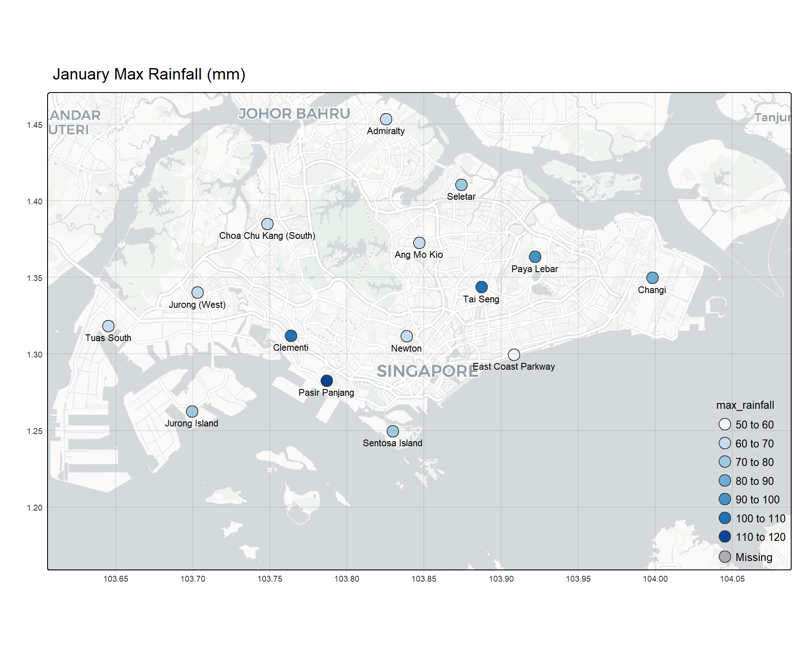

pacman::p_load(sp, sf, raster, spatstat, tmap, tidyverse,
spNetwork, tmaptools, raster, leaflet)Take-home Exercise 3
Prototyping Modules for Visual Analytics Shiny Application
1 Getting Started
1.1 Install and Load R Packages
2 Import Data
2.1 Import Aspatial Data
weather <- read_csv("data/aspatial/weather.csv")Rows: 6222 Columns: 13
── Column specification ────────────────────────────────────────────────────────
Delimiter: ","
chr (1): station
dbl (12): year, month, day, daily_rainfall_total_mm, highest_30_min_rainfall...
ℹ Use `spec()` to retrieve the full column specification for this data.
ℹ Specify the column types or set `show_col_types = FALSE` to quiet this message.2.2 Import Geospatial Data
mpsz <- st_read(dsn = "data/geospatial",
layer = "MP14_SUBZONE_WEB_PL")Reading layer `MP14_SUBZONE_WEB_PL' from data source
`C:\brigittatsai\ISSS608_AY2024-25_T2\Take-home_Ex\Take-home_Ex03\data\geospatial'
using driver `ESRI Shapefile'
Simple feature collection with 323 features and 15 fields
Geometry type: MULTIPOLYGON
Dimension: XY
Bounding box: xmin: 2667.538 ymin: 15748.72 xmax: 56396.44 ymax: 50256.33
Projected CRS: SVY213 Data Preparation
3.1 Match Station Names
sort(unique(weather$station)) [1] "Admiralty" "Ang Mo Kio" "Changi"
[4] "Choa Chu Kang (South)" "Clementi" "East Coast Parkway"
[7] "Jurong (West)" "Jurong Island" "Newton"
[10] "Pasir Panjang" "Paya Lebar" "Pulau Ubin"
[13] "Seletar" "Sembawang" "Sentosa Island"
[16] "Tai Seng" "Tuas South" sort(unique(mpsz$SUBZONE_N)) [1] "ADMIRALTY" "AIRPORT ROAD"
[3] "ALEXANDRA HILL" "ALEXANDRA NORTH"
[5] "ALJUNIED" "ANAK BUKIT"
[7] "ANCHORVALE" "ANG MO KIO TOWN CENTRE"
[9] "ANSON" "BALESTIER"
[11] "BANGKIT" "BAYFRONT SUBZONE"
[13] "BAYSHORE" "BEDOK NORTH"
[15] "BEDOK RESERVOIR" "BEDOK SOUTH"
[17] "BENCOOLEN" "BENDEMEER"
[19] "BENOI SECTOR" "BIDADARI"
[21] "BISHAN EAST" "BOAT QUAY"
[23] "BOON KENG" "BOON LAY PLACE"
[25] "BOON TECK" "BOULEVARD"
[27] "BRADDELL" "BRAS BASAH"
[29] "BRICKWORKS" "BUGIS"
[31] "BUKIT BATOK CENTRAL" "BUKIT BATOK EAST"
[33] "BUKIT BATOK SOUTH" "BUKIT BATOK WEST"
[35] "BUKIT HO SWEE" "BUKIT MERAH"
[37] "CAIRNHILL" "CECIL"
[39] "CENTRAL SUBZONE" "CENTRAL WATER CATCHMENT"
[41] "CHANGI AIRPORT" "CHANGI BAY"
[43] "CHANGI POINT" "CHANGI WEST"
[45] "CHATSWORTH" "CHENG SAN"
[47] "CHIN BEE" "CHINA SQUARE"
[49] "CHINATOWN" "CHOA CHU KANG CENTRAL"
[51] "CHOA CHU KANG NORTH" "CHONG BOON"
[53] "CITY HALL" "CITY TERMINALS"
[55] "CLARKE QUAY" "CLEMENTI CENTRAL"
[57] "CLEMENTI NORTH" "CLEMENTI WEST"
[59] "CLEMENTI WOODS" "CLIFFORD PIER"
[61] "COMMONWEALTH" "COMPASSVALE"
[63] "CONEY ISLAND" "CORONATION ROAD"
[65] "CRAWFORD" "DAIRY FARM"
[67] "DEFU INDUSTRIAL PARK" "DEPOT ROAD"
[69] "DHOBY GHAUT" "DOVER"
[71] "DUNEARN" "EAST COAST"
[73] "EVERTON PARK" "FABER"
[75] "FAJAR" "FARRER COURT"
[77] "FARRER PARK" "FERNVALE"
[79] "FLORA DRIVE" "FORT CANNING"
[81] "FRANKEL" "GALI BATU"
[83] "GEYLANG BAHRU" "GEYLANG EAST"
[85] "GHIM MOH" "GOMBAK"
[87] "GOODWOOD PARK" "GREENWOOD PARK"
[89] "GUILIN" "GUL BASIN"
[91] "GUL CIRCLE" "HENDERSON HILL"
[93] "HILLCREST" "HILLVIEW"
[95] "HOLLAND DRIVE" "HOLLAND ROAD"
[97] "HONG KAH" "HONG KAH NORTH"
[99] "HOUGANG CENTRAL" "HOUGANG EAST"
[101] "HOUGANG WEST" "INSTITUTION HILL"
[103] "INTERNATIONAL BUSINESS PARK" "ISTANA NEGARA"
[105] "JELEBU" "JOO KOON"
[107] "JOO SENG" "JURONG GATEWAY"
[109] "JURONG ISLAND AND BUKOM" "JURONG PORT"
[111] "JURONG RIVER" "JURONG WEST CENTRAL"
[113] "KAKI BUKIT" "KALLANG BAHRU"
[115] "KALLANG WAY" "KAMPONG BUGIS"
[117] "KAMPONG GLAM" "KAMPONG JAVA"
[119] "KAMPONG TIONG BAHRU" "KAMPONG UBI"
[121] "KANGKAR" "KATONG"
[123] "KEAT HONG" "KEBUN BAHRU"
[125] "KEMBANGAN" "KENT RIDGE"
[127] "KHATIB" "KIAN TECK"
[129] "KIM KEAT" "KOVAN"
[131] "KRANJI" "LAKESIDE"
[133] "LAVENDER" "LEEDON PARK"
[135] "LEONIE HILL" "LIM CHU KANG"
[137] "LITTLE INDIA" "LIU FANG"
[139] "LORONG 8 TOA PAYOH" "LORONG AH SOO"
[141] "LORONG CHUAN" "LORONG HALUS"
[143] "LORONG HALUS NORTH" "LOWER SELETAR"
[145] "LOYANG EAST" "LOYANG WEST"
[147] "MACKENZIE" "MACPHERSON"
[149] "MALCOLM" "MANDAI EAST"
[151] "MANDAI ESTATE" "MANDAI WEST"
[153] "MARGARET DRIVE" "MARINA CENTRE"
[155] "MARINA EAST" "MARINA EAST (MP)"
[157] "MARINA SOUTH" "MARINE PARADE"
[159] "MARITIME SQUARE" "MARYMOUNT"
[161] "MATILDA" "MAXWELL"
[163] "MEI CHIN" "MIDVIEW"
[165] "MONK'S HILL" "MOULMEIN"
[167] "MOUNT EMILY" "MOUNT PLEASANT"
[169] "MOUNTBATTEN" "NASSIM"
[171] "NATIONAL UNIVERSITY OF S'PORE" "NATURE RESERVE"
[173] "NEE SOON" "NEWTON CIRCUS"
[175] "NORTH-EASTERN ISLANDS" "NORTH COAST"
[177] "NORTHLAND" "NORTHSHORE"
[179] "ONE NORTH" "ONE TREE HILL"
[181] "ORANGE GROVE" "OXLEY"
[183] "PANDAN" "PANG SUA"
[185] "PASIR PANJANG 1" "PASIR PANJANG 2"
[187] "PASIR RIS CENTRAL" "PASIR RIS DRIVE"
[189] "PASIR RIS PARK" "PASIR RIS WAFER FAB PARK"
[191] "PASIR RIS WEST" "PATERSON"
[193] "PAYA LEBAR EAST" "PAYA LEBAR NORTH"
[195] "PAYA LEBAR WEST" "PEARL'S HILL"
[197] "PEI CHUN" "PENG SIANG"
[199] "PENJURU CRESCENT" "PEOPLE'S PARK"
[201] "PHILLIP" "PIONEER SECTOR"
[203] "PLAB" "PORT"
[205] "POTONG PASIR" "PULAU PUNGGOL BARAT"
[207] "PULAU PUNGGOL TIMOR" "PULAU SELETAR"
[209] "PUNGGOL CANAL" "PUNGGOL FIELD"
[211] "PUNGGOL TOWN CENTRE" "QUEENSWAY"
[213] "RAFFLES PLACE" "REDHILL"
[215] "RESERVOIR VIEW" "RIDOUT"
[217] "RIVERVALE" "ROBERTSON QUAY"
[219] "ROCHOR CANAL" "SAFTI"
[221] "SAMULUN" "SAUJANA"
[223] "SELEGIE" "SELETAR"
[225] "SELETAR AEROSPACE PARK" "SELETAR HILLS"
[227] "SEMAKAU" "SEMBAWANG CENTRAL"
[229] "SEMBAWANG EAST" "SEMBAWANG HILLS"
[231] "SEMBAWANG NORTH" "SEMBAWANG SPRINGS"
[233] "SEMBAWANG STRAITS" "SENGKANG TOWN CENTRE"
[235] "SENGKANG WEST" "SENJA"
[237] "SENNETT" "SENOKO NORTH"
[239] "SENOKO SOUTH" "SENOKO WEST"
[241] "SENTOSA" "SERANGOON CENTRAL"
[243] "SERANGOON GARDEN" "SERANGOON NORTH"
[245] "SERANGOON NORTH IND ESTATE" "SHANGRI-LA"
[247] "SHIPYARD" "SIGLAP"
[249] "SIMEI" "SIMPANG NORTH"
[251] "SIMPANG SOUTH" "SINGAPORE GENERAL HOSPITAL"
[253] "SINGAPORE POLYTECHNIC" "SOMERSET"
[255] "SOUTHERN GROUP" "SPRINGLEAF"
[257] "STRAITS VIEW" "SUDONG"
[259] "SUNGEI ROAD" "SUNSET WAY"
[261] "SWISS CLUB" "TAGORE"
[263] "TAI SENG" "TAMAN JURONG"
[265] "TAMPINES EAST" "TAMPINES NORTH"
[267] "TAMPINES WEST" "TANGLIN"
[269] "TANGLIN HALT" "TANJONG IRAU"
[271] "TANJONG PAGAR" "TANJONG RHU"
[273] "TEBAN GARDENS" "TECK WHYE"
[275] "TELOK BLANGAH DRIVE" "TELOK BLANGAH RISE"
[277] "TELOK BLANGAH WAY" "TENGAH"
[279] "TENGEH" "THE WHARVES"
[281] "TIONG BAHRU" "TIONG BAHRU STATION"
[283] "TOA PAYOH CENTRAL" "TOA PAYOH WEST"
[285] "TOH GUAN" "TOH TUCK"
[287] "TOWNSVILLE" "TRAFALGAR"
[289] "TUAS BAY" "TUAS NORTH"
[291] "TUAS PROMENADE" "TUAS VIEW"
[293] "TUAS VIEW EXTENSION" "TUKANG"
[295] "TURF CLUB" "TYERSALL"
[297] "ULU PANDAN" "UPPER PAYA LEBAR"
[299] "UPPER THOMSON" "VICTORIA"
[301] "WATERWAY EAST" "WENYA"
[303] "WEST COAST" "WESTERN WATER CATCHMENT"
[305] "WOODGROVE" "WOODLANDS EAST"
[307] "WOODLANDS REGIONAL CENTRE" "WOODLANDS SOUTH"
[309] "WOODLANDS WEST" "WOODLEIGH"
[311] "XILIN" "YEW TEE"
[313] "YIO CHU KANG" "YIO CHU KANG EAST"
[315] "YIO CHU KANG NORTH" "YIO CHU KANG WEST"
[317] "YISHUN CENTRAL" "YISHUN EAST"
[319] "YISHUN SOUTH" "YISHUN WEST"
[321] "YUHUA EAST" "YUHUA WEST"
[323] "YUNNAN" mpsz <- mpsz %>%
mutate(SUBZONE_N = case_when(
SUBZONE_N == "ADMIRALTY" ~ "Admiralty",
SUBZONE_N == "ANG MO KIO TOWN CENTRE" ~ "Ang Mo Kio",
SUBZONE_N %in% c("CHANGI AIRPORT", "CHANGI BAY",
"CHANGI POINT", "CHANGI WEST") ~ "Changi",
SUBZONE_N == "CHOA CHU KANG CENTRAL" ~ "Choa Chu Kang (South)",
SUBZONE_N == "CLEMENTI CENTRAL" ~ "Clementi",
SUBZONE_N == "EAST COAST" ~ "East Coast Parkway",
SUBZONE_N == "JURONG WEST CENTRAL" ~ "Jurong (West)",
SUBZONE_N == "JURONG ISLAND AND BUKOM" ~ "Jurong Island",
SUBZONE_N == "NEWTON CIRCUS" ~ "Newton",
SUBZONE_N %in% c("PASIR PANJANG 1", "PASIR PANJANG 2") ~ "Pasir Panjang",
SUBZONE_N %in% c("PAYA LEBAR EAST", "PAYA LEBAR NORTH",
"PAYA LEBAR WEST") ~ "Paya Lebar",
SUBZONE_N == "PULAU UBIN" ~ "Pulau Ubin",
SUBZONE_N %in% c("SELETAR", "SELETAR AEROSPACE PARK") ~ "Seletar",
SUBZONE_N %in% c("SEMBAWANG CENTRAL", "SEMBAWANG EAST", "SEMBAWANG NORTH",
"SEMBAWANG SPRINGS", "SEMBAWANG STRAITS") ~ "Sembawang",
SUBZONE_N == "SENTOSA" ~ "Sentosa Island",
SUBZONE_N == "TAI SENG" ~ "Tai Seng",
SUBZONE_N == "TUAS BAY" ~ "Tuas South",
TRUE ~ SUBZONE_N
))3.2 Join Dataset
weather_map <- left_join(mpsz, weather,
by = c("SUBZONE_N" = "station"),
relationship = "many-to-many")3.3 Remove Unnecessary Columns
weather_map <- subset(weather_map, select = -c(OBJECTID, SUBZONE_NO, SUBZONE_C,
PLN_AREA_C, REGION_C, FMEL_UPD_D,
CA_IND, INC_CRC))3.4 Rename Columns
weather <- weather %>%
rename(Station = station,
Year = year,
Month = month,
Day = day,
rainfall_total = daily_rainfall_total_mm,
rainfall_30 = highest_30_min_rainfall_mm,
rainfall_60 = highest_60_min_rainfall_mm,
rainfall_120 = highest_120_min_rainfall_mm,
mean_temp = mean_temperature_c,
max_temp = maximum_temperature_c,
min_temp = minimum_temperature_c,
mean_wind = mean_wind_speed_km_h,
max_wind = max_wind_speed_km_h)weather_map <- weather_map %>%
rename(Station = SUBZONE_N,
Area = PLN_AREA_N,
Region = REGION_N,
Year = year,
Month = month,
Day = day,
rainfall_total = daily_rainfall_total_mm,
rainfall_30 = highest_30_min_rainfall_mm,
rainfall_60 = highest_60_min_rainfall_mm,
rainfall_120 = highest_120_min_rainfall_mm,
mean_temp = mean_temperature_c,
max_temp = maximum_temperature_c,
min_temp = minimum_temperature_c,
mean_wind = mean_wind_speed_km_h,
max_wind = max_wind_speed_km_h)3.5 Remove Missing Records
Define list of stations:
stations <- c("Admiralty", "Ang Mo Kio", "Changi", "Choa Chu Kang (South)",
"Clementi", "East Coast Parkway", "Jurong (West)",
"Jurong Island", "Newton", "Pasir Panjang", "Paya Lebar",
"Pulau Ubin", "Seletar", "Sembawang", "Sentosa Island",
"Tai Seng", "Tuas South")weather <- weather %>%
filter(!(Station %in% stations & (is.na(rainfall_total) | is.na(rainfall_30) |
is.na(rainfall_60) | is.na(rainfall_120) |
is.na(mean_temp) | is.na(max_temp) |
is.na(min_temp) | is.na(mean_wind) |
is.na(max_wind))))weather_map <- weather_map %>%
filter(!(Station %in% stations & (is.na(rainfall_total) | is.na(rainfall_30) |
is.na(rainfall_60) | is.na(rainfall_120) |
is.na(mean_temp) | is.na(max_temp) |
is.na(min_temp) | is.na(mean_wind) |
is.na(max_wind))))3.6 Handling Date Data
weather <- weather %>%
mutate(
yearmonth = make_date(Year, Month, 1)
)weather_map <- weather_map %>%
mutate(
yearmonth = make_date(Year, Month, 1)
)3.7 Derive Parameters
In the analysis, we aim to provide several aggregations to see the monthly weather conditions in the form of geospatial map. The following are the variables that we aim to show in the chart:
Weather Parameter:
- Rainfall
- Wind Speed
- Temperature
Measurement Options:
- Mean
- Maximum
- Frequency
3.7.1 Rainfall Parameters
To define the frequency of rainfall, we will use “Heavy Rain” as the baseline to define the frequency of rainfall in a defined period of time (weekly/monthly/quarterly). Any daily rainfall recorded that is above or equal to 31 mm/ day is considered as heavy rain.
Rainfall Parameters
| Rain Type | Total Daily Rainfall (mm) |
|---|---|
| No Rain | 0 |
| Very Light Rain | 0.1 - 0.9 |
| Light Rain | 1.0 - 10 |
| Moderate Rain | 11 - 30 |
| Heavy Rain | 31 - 70 |
| Very Heavy Rain | 71 - 150 |
| Extremely Heavy Rain | > 151 |
3.8 Combine Geometry
weather_map <- weather_map %>%
group_by(Station) %>%
mutate(geometry = st_union(geometry)) %>%
mutate(geometry = st_cast(geometry, "MULTIPOLYGON")) %>%
ungroup()# Create a dataset with all combinations of yearmonth and Station (to keep all stations)
all_combinations <- weather_map %>%
st_drop_geometry() %>% # Drop geometry temporarily
distinct(yearmonth, Station)
# Merge the combinations back to weather_map to fill in missing rainfall data
monthly_rainfall <- weather_map %>%
group_by(yearmonth, Station, geometry) %>%
summarize(
max_rainfall = if (all(is.na(rainfall_total))) NA_real_ else max(rainfall_total, na.rm = TRUE),
mean_rainfall = if (all(is.na(rainfall_total))) NA_real_ else mean(rainfall_total, na.rm = TRUE),
.groups = "drop"
) %>%
right_join(all_combinations, by = c("yearmonth", "Station")) %>%
arrange(yearmonth, Station)months_2024 <- seq(ymd("2024-01-01"), ymd("2024-12-01"), by = "month")
# Separate rows with missing yearmonth
stations_missing_yearmonth <- monthly_rainfall %>%
filter(is.na(yearmonth)) %>%
# Duplicate rows for each month
mutate(yearmonth = list(months_2024)) %>%
unnest(yearmonth)
monthly_rainfall <- monthly_rainfall %>%
filter(!is.na(yearmonth)) %>%
bind_rows(stations_missing_yearmonth) %>%
arrange(Station, yearmonth)Filter to January
jan_rainfall <- monthly_rainfall %>%
filter(yearmonth == "2024-01-01")jan_rainfall_with_data <- jan_rainfall %>%
filter(!is.na(max_rainfall))tmap_mode("plot")ℹ tmap mode set to "plot".tm_shape(jan_rainfall) +
tm_layout(
main.title = "January Max Rainfall (mm)",
main.title.position = "center",
main.title.size = 1.2,
legend.position = c("RIGHT", "BOTTOM"),
legend.title.size = 0.8,
legend.text.size = 0.8,
legend.outside = TRUE,
legend.outside.position = "bottom",
legend.frame = FALSE,
frame = TRUE
) +
tm_shape(jan_rainfall_with_data) +
tm_symbols(
col = "max_rainfall",
palette = "Blues",
title.col = "Max Rainfall (mm)",
popup.vars = c("Station", "max_rainfall"),
legend.size.show = FALSE
) +
tm_shape(jan_rainfall_with_data) +
tm_text("Station", size = 0.7, col = "black", shadow = FALSE, ymod=-1) +
tm_grid(alpha = 0.2) +
tm_basemap("CartoDB.Positron")[v3->v4] `tm_layout()`: use `tm_title()` instead of `tm_layout(main.title = )`
── tmap v3 code detected ───────────────────────────────────────────────────────
[v3->v4] `tm_symbols()`: migrate the argument(s) related to the scale of the
visual variable `fill` namely 'palette' (rename to 'values') to fill.scale =
tm_scale(<HERE>).
[v3->v4] `symbols()`: use 'fill' for the fill color of polygons/symbols
(instead of 'col'), and 'col' for the outlines (instead of 'border.col').
[v3->v4] `symbols()`: migrate the argument(s) related to the legend of the
visual variable `fill` namely 'title.col' (rename to 'title') to 'fill.legend =
tm_legend(<HERE>)'
[v3->v4] `symbols()`: use `size.legend = tm_legend_hide()` instead of
`legend.size.show = FALSE`.
[v3->v4] `tm_text()`: migrate the layer options 'shadow' to 'options =
opt_tm_text(<HERE>)'
[cols4all] color palettes: use palettes from the R package cols4all. Run
`cols4all::c4a_gui()` to explore them. The old palette name "Blues" is named
"brewer.blues"
Multiple palettes called "blues" found: "brewer.blues", "matplotlib.blues". The first one, "brewer.blues", is returned.